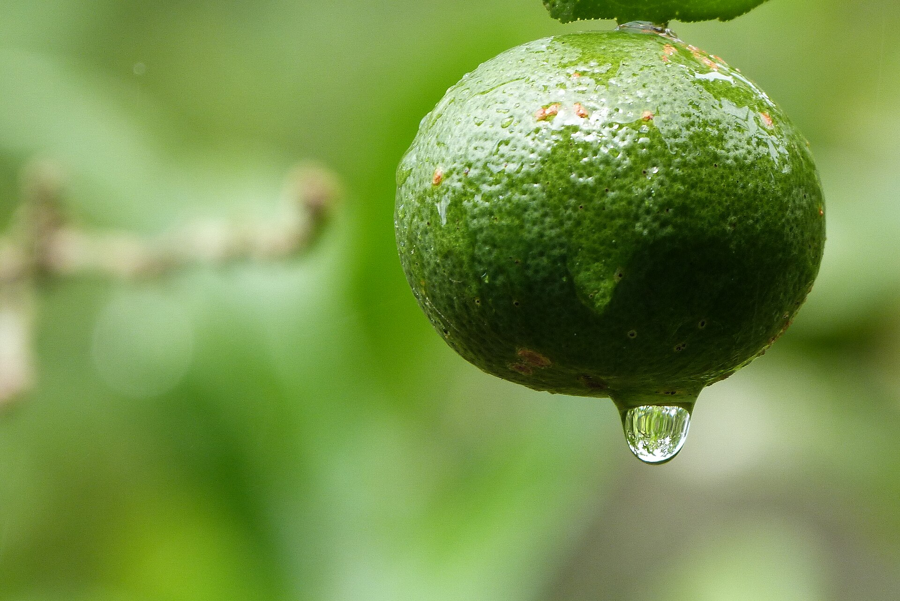

Árvores e Frutíferas
Limão-rosa
Citrus × limonia
No Brasil, limão-rosa é um dos nomes populares do limão-cravo, um cítrico de casca alaranjada e aroma marcante. Seu sabor é ácido e o suco pode ser usado em bebidas e preparações culinárias. A planta é um cítrico de porte arbóreo, embora em certas regiões seja chamada de limoeiro-cravo.
- Espécie
- Citrus × limonia
- Outros nomes
- Limão-cravo, limão-cavalo
- Destaque
- Casca alaranjada e aroma intenso